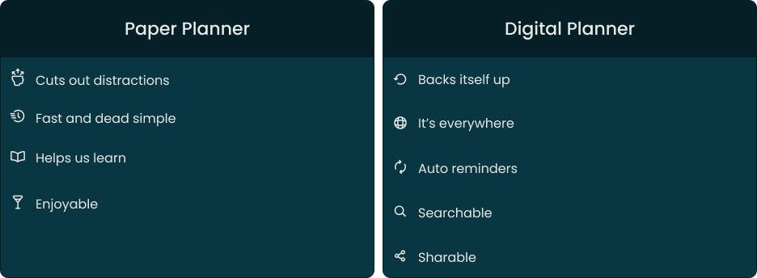
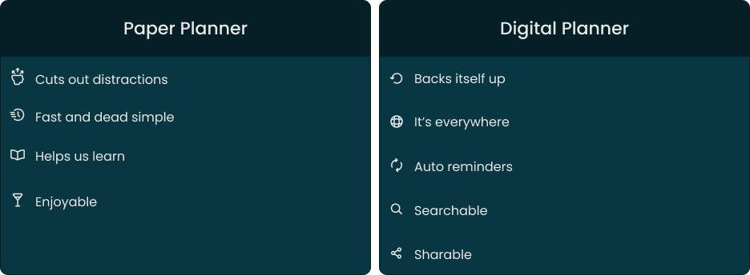
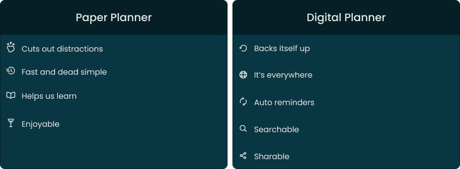

User Research
In the early 2000s, calendars went digital with tools like Outlook and Google. Over the past decade, paper planning made a comeback with #planneraddict reached nearly 5M mentions on Instagram.

To understand this shift, we listed the advantages of both formats.

 

Paper remains appealing because handwriting is fast, personal, and memorable, helping us form stronger visual and mental connections.
Survey
To better understand this, we surveyed users about their calendar habits and the motivations behind them.
65
%
Use it to manage
their agenda
73
%
Use the calendar as a
daily planner
52
%
Use it for their
personal needs